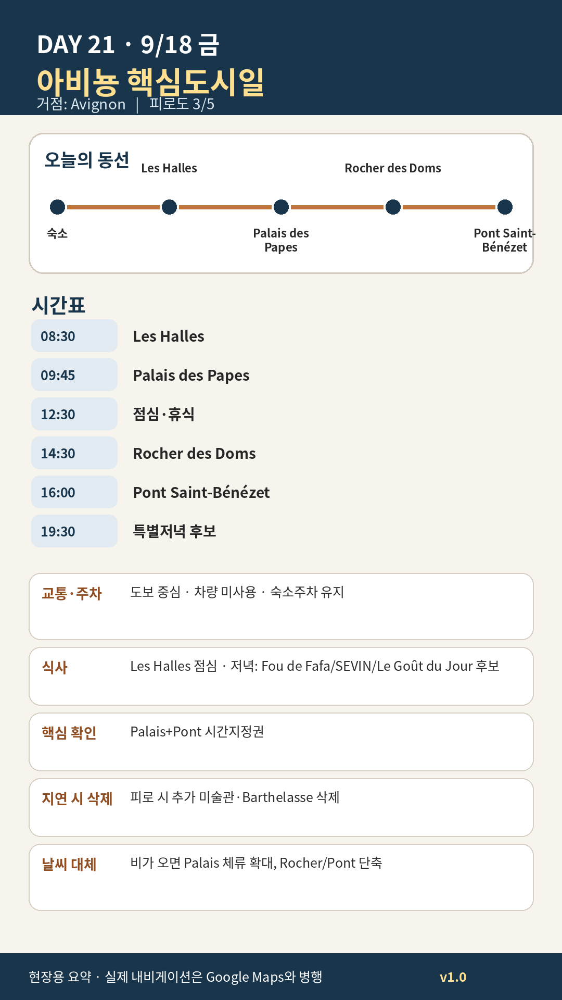

Day 21 · 9/18 금 · Avignon Phase 4 최종

카드의 지도영역은 일정 순서를 보여주는 개요이며 내비게이션이 아닙니다. 실제 도보·운전 경로는 Google Maps에서 다시 계산하세요.
시간표
이 날은 원고에 시각표가 없다. 구간 일정은 일정 한눈에 에 있다.
이 날의 메모
Les Halles, 교황궁, 론강과 성벽도시
Palais des Papes 실용정보
- 운영: 3월 1일–11월 1일 매일 09:00–19:00, 마지막 입장 18:00.
- 요금: 공식 페이지 기준 Palais+Pont 성인 결합권 약 €17, Palais 단독 약 €14.50. 예약 화면에서 최종 확인.
- 권장시간: 1시간 45분–2시간 15분.
- 관람법: 방을 전부 기억하려 하지 말고, 대예배당·대중정치공간·교황 사적공간·벽화·요새적 외관의 대비를 본다.
- 2026 변화: 5월부터 새 해설과 일부 새 공개공간이 단계적으로 도입되며 공사는 2027년까지 이어질 수 있다. 폐쇄구간을 당일 확인한다.
오늘의 필수·선택
- 필수: Les Halles, Palais, Rocher, Pont
- 우선 추천: Place de l’Horloge·Rue des Marchands, Rhône 강변
- 선택: Petit Palais 60분, Barthelasse 나룻배, Villeneuve 전망
- 삭제 1순위: 추가 박물관
꼭 해볼 것
- Palais 앞 광장에서 건물의 규모와 비대칭 파사드를 먼저 본 뒤 입장하기
- Histopad·WebApp은 모든 방에서 사용하지 말고 복원효과가 큰 3–4곳에 집중하기
- Rocher des Doms에서 Pont, Rhône, Villeneuve의 방향을 비교하기
- 저녁은 관광광장 바로 앞보다 Corps Saints·Vernet·Teinturiers 주변으로 이동하기
오늘 확인할 것
- 핵심 실행
- Palais·Rocher·Pont
- 권장 출발
- 08:30 Les Halles
- 완충
- Palais 입장 30분 전
- 최고 리스크
- 시간지정·보행
- 우선 삭제
- 추가미술관
- 대체안
- Palais 중심 실내일
- 식사·휴식
- Les Halles/구시가지
- 잠금 필요
- Palais·식당
이 날의 장소
일자별 시간표와 본문 표기에서 찾은 것이다. 하루의 전부가 아니라 장소 카드가 있는 것만 담는다.